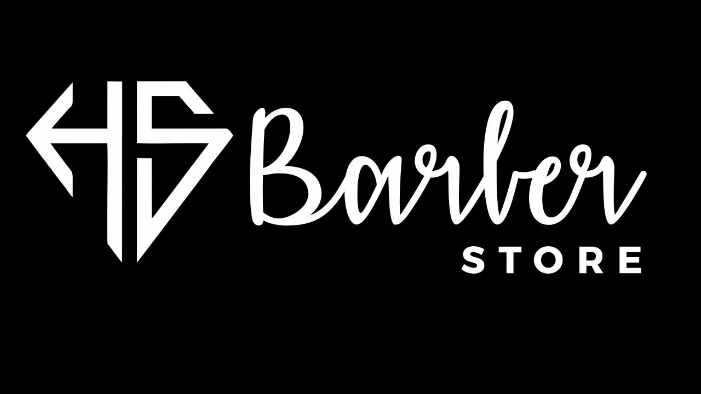
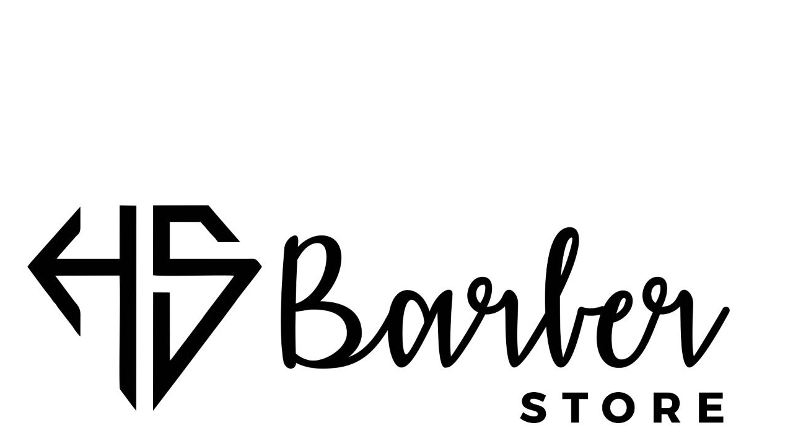
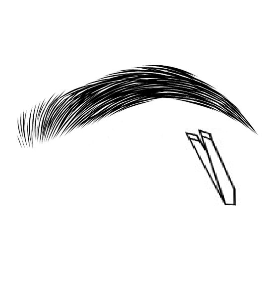
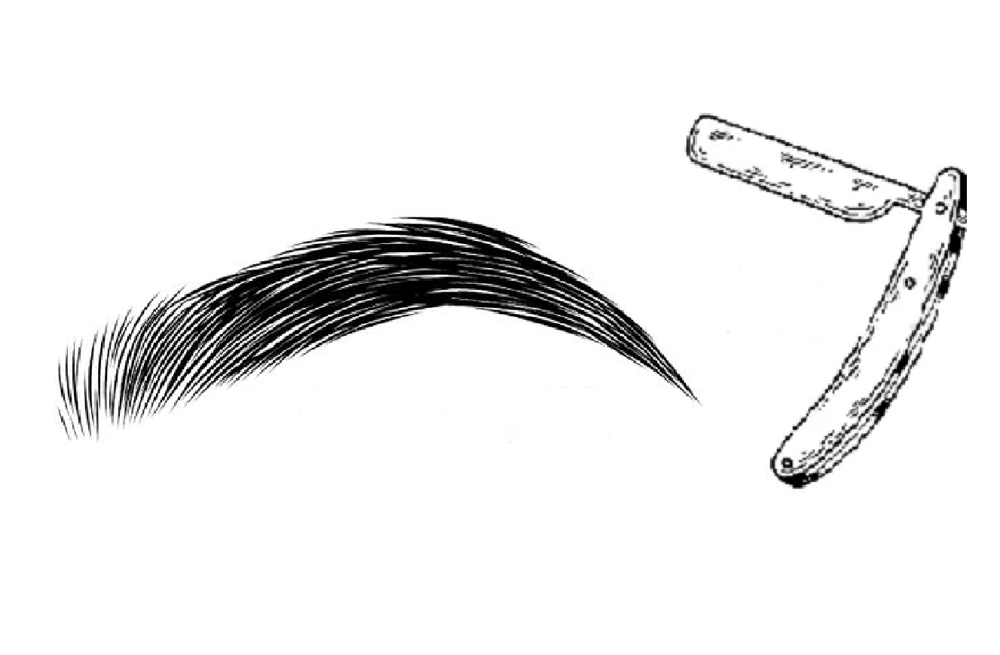
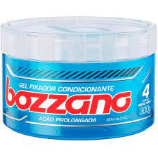
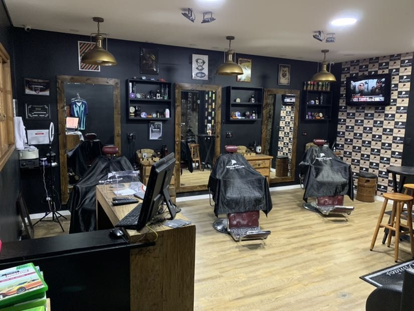

Serviços
Produtos
Contato
Localização
Agendar

Como esta sua experiencia no site?
Contatos
Numero whatsapp
(37) 99984-0117
Pagina do instagram
hsbarberr
Nome
Email
Assunto
enviar
Serviços
Corte de cabelo na tesousa 15,00R$
Fazer a barba 10,00R$

sobrancelha na pinça 20,00R$

sobrancelha na navalha 10,00 R$
Agende um horário
15,00 R$
clique aqui para marcar um horario
10,00 R$
clique aqui para marcar um horario
20,00 R$
clique aqui para marcar um horario
10,00 R$
clique aqui para marcar um horario
Marcar horario
Produtos
R$ 21,00
Clique aqui para comprar/ fazer pedido

R$ 17,00
Clique aqui para comprar/ fazer pedido
R$ 50,00
Clique aqui para comprar/ fazer pedido
R$ 45,00
Clique aqui para comprar/ fazer pedido
Efetuar compra
Tirar Duvida
Localização
mostrar entrada
mostrar entrada
Formiga-MG
Endereço: Praça Florêncio Rodrigues Nunes sobrinho
Numero:15
Horario: Terça a Sabado, 7:00 as 20:00

© 2022 hsbarberr | by Sofia Montes & Vitor Rodrigues
Todos os direitos reservados